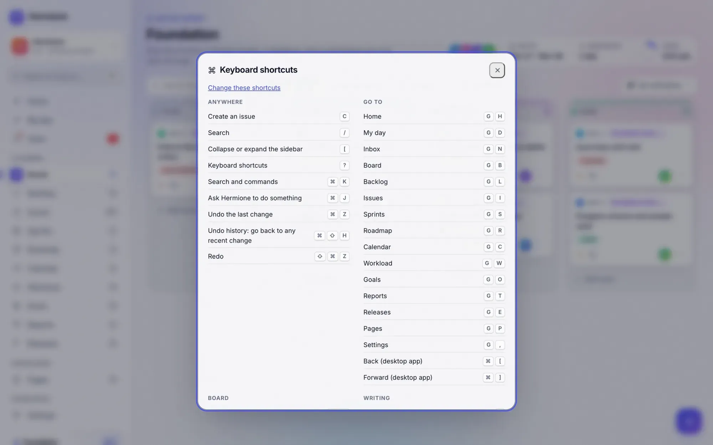
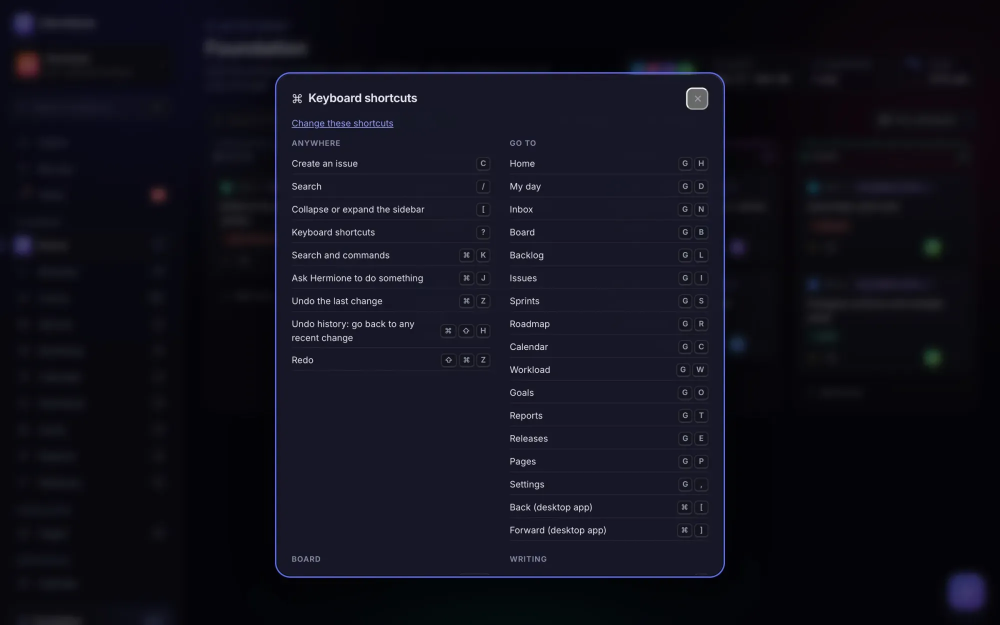
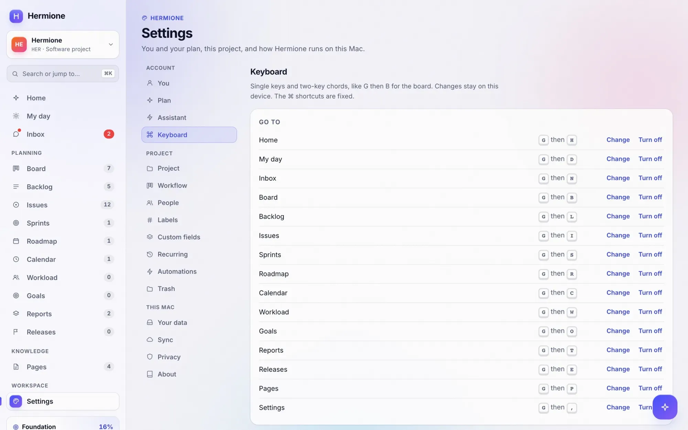
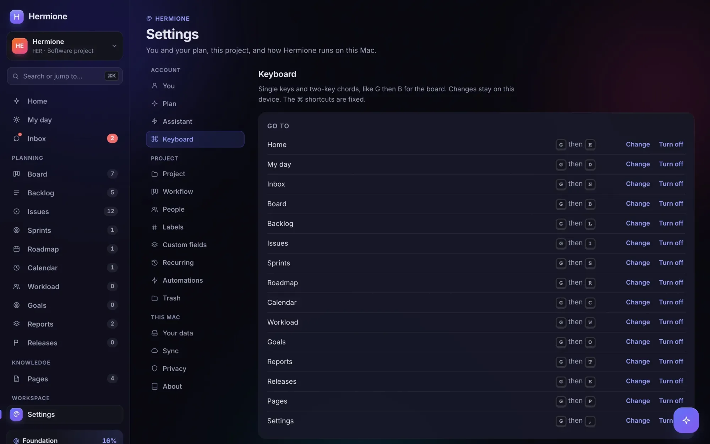

Using Hermione
Keyboard
Press ? anywhere to see these in the app. Off a Mac, Ctrl stands in for
⌘ .


The shortcuts sheet
# Anywhere
Keys
Does
⌘K or / Search issues, pages, comments and commands
⌘J Ask Hermione (the assistant)
C Create an issue
⌘Z / ⇧⌘Z Undo / redo
⇧⌘H Undo history
⌘[ / ⌘] Back / forward
[ Collapse or expand the sidebar
? This list
⇧⌘Space Quick capture, from any app (Mac app)
# Go toPress G , then the letter.
Keys
Goes to
Keys
Goes to
G H Home
G C Calendar
G D My day
G W Workload
G N Inbox
G O Goals
G B Board
G T Reports
G L Backlog
G E Releases
G I Issues
G P Pages
G S Sprints
G , Settings
G R Roadmap
# On the board
Keys
Does
← → ↑ ↓ Move between cards
Space Pick up a card, then drop it
Esc Put a picked-up card back
X Select the focused card
Return Open the focused card
Shift+F10 The card's menu
# In Triage
Keys
Does
J / K Next / previous
A Accept
M Assign to me and accept
S Snooze a week
D Decline and archive
# In the editor
Keys
Does
⌘B / ⌘I Bold / italic
⌘K Link
⌘↵ Save
/ at the start of a lineInsert a block
@ Mention someone
# Changing themSettings → Keyboard lists every single-key shortcut and G chord. Click one
to record new keys, turn it off, or reset it. Hermione refuses a combination
another shortcut already uses, and tells you which one.


Settings → Keyboard
Edit this page on GitHub